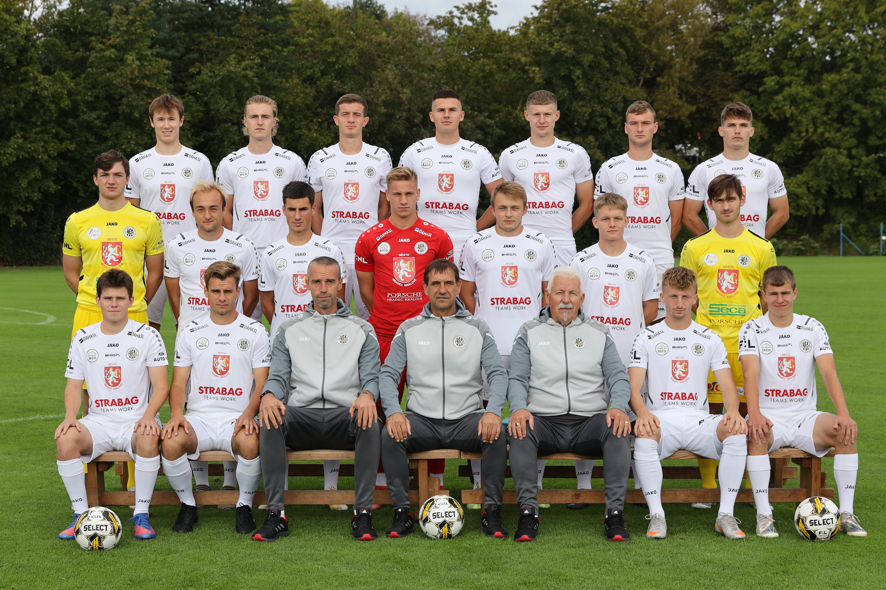

| Post | Jméno | Číslo |
|---|---|---|
| B | Richard Hrnčíř | 1 |
| O | Vojtěch Baloun | 2 |
| Z | Daniel Hypšman | 4 |
| Z | Vratislav Junek | 5 |
| Z | Jan Mahr | 6 |
| Z | Filip Schmoranz | 9 |
| U | Matěj Šípek | 10 |
| B | Marek Čábelka | 12 |
| O | Kevin Houdek | 15 |
| O | Marek Kadrmas | 16 |
| U | Matěj Hodač | 17 |
| O | Martin Hlaváč | 18 | Z | Radim Zengler | 19 |
| B | Jiří Strnad | 20 |
| Z | Jakub Kosař | 21 |
| Z | Filip Březák | 22 |
| O | Daniil Holovatskyi | 23 | Z | Tadeáš Boniš | 27 |